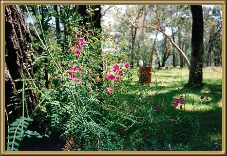
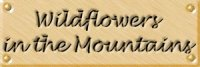

Photographer: Jean Stokes
This photo was taken around the Warrambungle National Park somewhere - the flowers just looked so pretty! This is a native Sarsaparilla or Smilax glychiphylla. The leaves are apparently very strongly flavoured.